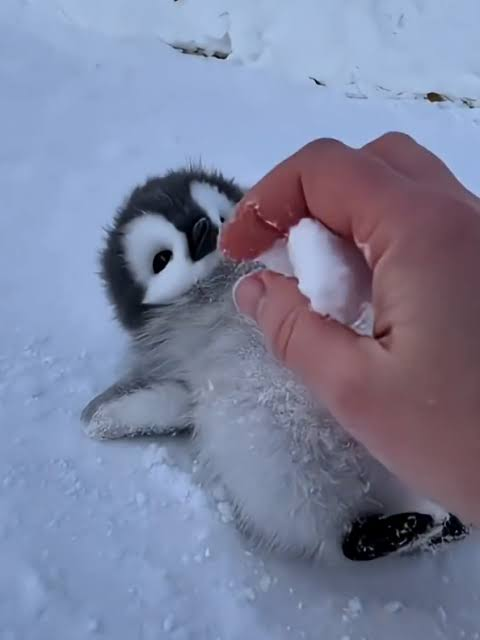

Penguin
Penguins are birds that live mainly in South America, South Africa, Australia, with one a couple species living in Antarctica. They are roughly a foot or two shorter than humans, covered in white and black feathers with an orange beak. Despite being a species of bird, they cannot fly as their bodies have evolved to better soar through the water.


Red Panda
The red panda is a small mammal native to the eastern Himalayas and southwestern China. It has dense reddish-brown fur with a black belly and legs, white-lined ears, a mostly white muzzle and a ringed tail. It is well adapted to climbing due to its flexible joints and curved semi-retractile claws. The red panda inhabits temperate broadleaf and mixed forests, favouring steep slopes with dense bamboo cover close to water sources